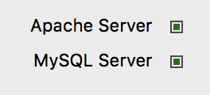
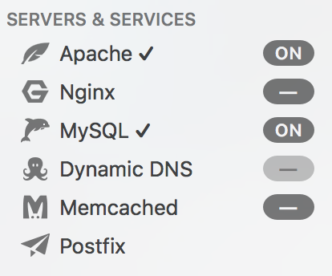
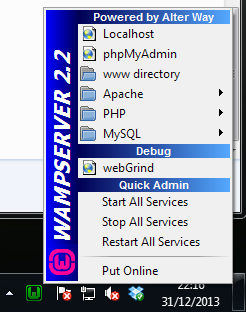

H2 - P2021
Développement web
Cours 09
- github : https://github.com/brunosimon/hetic-p2021
- site : http://bruno-simon.com/hetic/p2021/
- contact : bruno.simon@hetic.net
PHP
Les bases
Qu'est-ce que c'est
PHP est un language de programmation
Exécuté côté serveur
Se combine parfaitement avec du HTML
Orienté objet (pas obligatoire)
Concrètement ça sert à quoi ?
Au final, le PHP va nous permettre de renvoyer du HTML, mais en faisant plein de choses avant
- Communiquer avec une base de données
- Communiquer avec des APIs
(Facebook, Twitter, Instagram, Google, ...) - Traiter des formulaires
- Gérer des sessions
- Sécuriser des espaces
- etc.
Exemples plus concrets
- Aller chercher des articles dans une BDD base de données puis les afficher dans la page
- Administrer ces articles dans un espace sécurisé (login, mot de passe)
- Aller chercher les derniers tweets de tel hashtag et les enregistrer dans la BDD
- Récupérer les informations de profil Facebook d'un utilisateur
- Permettre à l'utilisateur d'enregistrer son mail pour lui envoyer des newsletter
- Permettre à l'utilisateur d'effectuer un paiement
Avantages
Grande communauté
Facile à mettre en place
(la majorité des hébergeurs le supporte)
Robuste
Inconvenients
Syntaxe
Permissif
Pas le plus rapide
(beaucoup plus rapide depuis la version 7)
Il existe des alternatives
Ruby on rails

100% objet
Syntaxiquement concis
Plus rapide dans certains cas
Node.JS

JS côté serveur
Nouvelles possibilités
Accessible si vous maîtrisez JS
Fonctionnement
Un script PHP est un fichier ayant pour extension .php
C'est le logiciel Apache Server qui va l'interpréter
Il faut donc installer Apache pour pouvoir faire du PHP que ce soit en local (sur votre ordinateur) ou en ligne (sur le serveur)
Lorsque l'utilisateur va accéder au site, Apache va interpréter/exécuter le script PHP et renvoyer le résultat à l'utilisateur
Il va donc falloir installer Apache
http://www.wampserver.com/#download-wrapper - WampServer (windows)
https://www.mamp.info/ - MAMP (mac)
Les deux logiciels (windows et mac) fonctionnent sensiblement de la même manière.
Il faut lancer le logiciel puis lancer le serveur
Vous allez maintenant devoir développer dans des dossiers spécifiques :
Applications/MAMP/htdocs/ (mamp)
C:\wamp\www\ (wamp)
 

Hello World
Dans le dossier de votre serveur (htdocs ou www), créez le fichier hello-world.php
<?php
echo 'Hello World';
?>
Pour voir le résultat, rendez-vous à l'adresse suivante depuis votre navigateur :
(Apache doit être lancé)
http://localhost/hello-world.php (Windows)
http://localhost:8888/hello-world.php (Mac)
Explication
La partie PHP est délimitée par <?php et ?>
Il est possible d'utiliser <? et ?>
echo indique que le script doit renvoyer ce qui suit
Comme en JS, les instructions se terminent par un ;
<?
echo 'Hello World';
?>
Lorsqu'il n'y a que du PHP, il est inutile de fermer PHP
<?
echo 'Hello World';
Commenter votre code
Les commentaires fonctionnent comme en JS
Plusieurs lignes entre /* et */
Une seule ligne précédée par //
<?
/*
Plusieurs lignes
comme ça
*/
// Une seule ligne comme ça
echo 'Hello World';
HTML et PHP
En dehors des balises PHP <? et ?> vous pouvez mettre du HTML
Si vous voulez mettre du PHP dans une page HTML pensez simplement à changer l'extension de votre fichier de .html à .php
<? echo 'Hello World'; ?>
<a href="#">Mon lien</a>